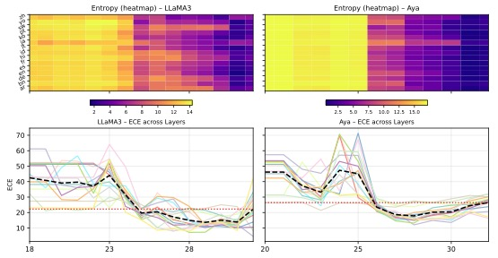
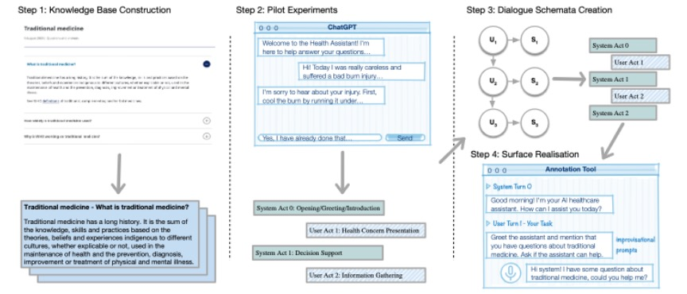
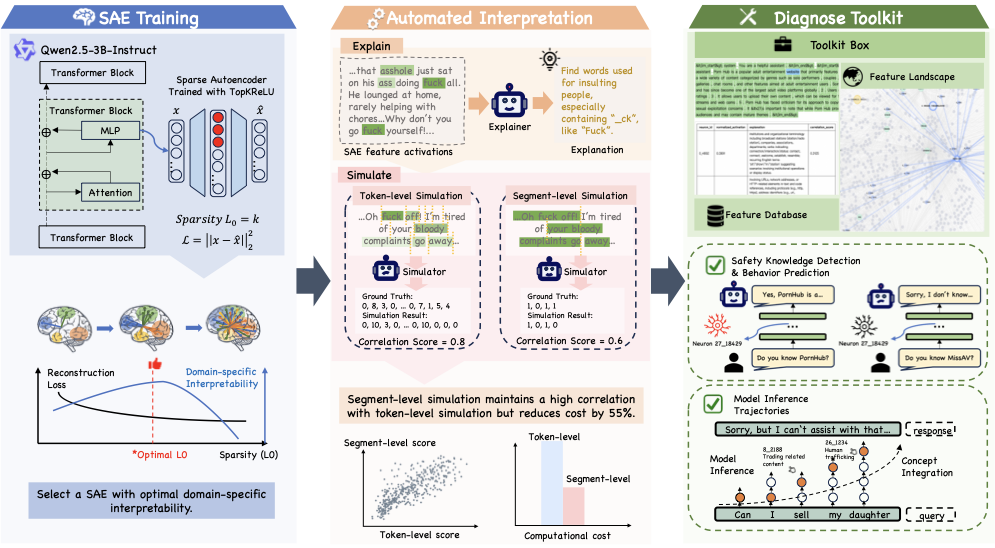
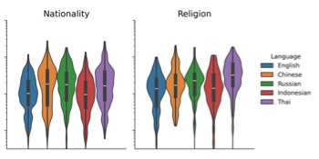
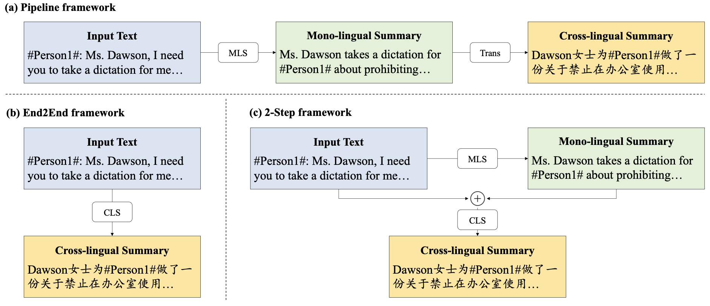
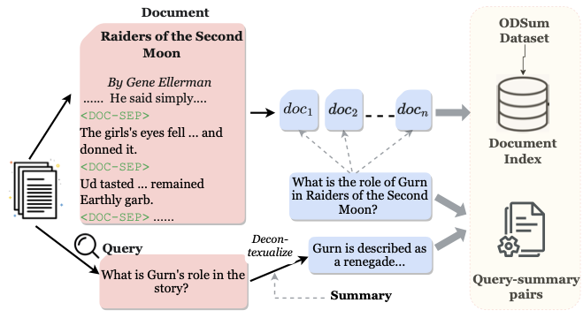

Sept 2024 — Jun 2028 (expected)
PhD in Computation, Cognition and Language · Hughes Hall · advised by Prof. Anna Korhonen
I am a second-year PhD student at the Language Technology Lab, University of Cambridge, advised by Prof. Anna Korhonen.
My PhD focuses on Natural Language Processing — in particular, multilingual interpretability of large language models.






Before my PhD, I completed a B.Eng. (Honours) in Computer Science and Engineering at Zhejiang University (Chu Kochen Honors College). During my undergraduate studies I was supervised by Prof. Yue Zhang as a research intern at Westlake University, spent a semester as an exchange student at Cornell University working as a research assistant in CommCollabTech, and completed a research internship at Yale University under Prof. Arman Cohan. I was also a visiting student at the University of Oxford.
Wu is my muttersprache but my education was in Mandarin. Apart from that I speak some French, Japanese, Russian, English and German to varying degrees. I am learning Polish and Portuguese this year. I am passionate about languages and it has always been a motivation for me to work on NLP.
Some other things: I am a cinema enthusiast and I was at the 76th–78th Festival de Cannes; I consider myself a Buddhist; I trained Guqin at the Westlake Qin-Society and taught it at ZJU for a year.